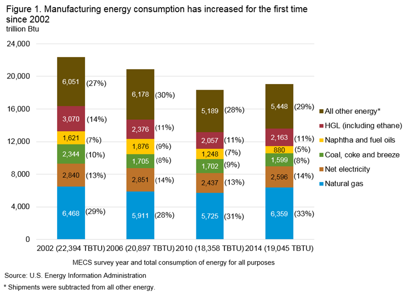
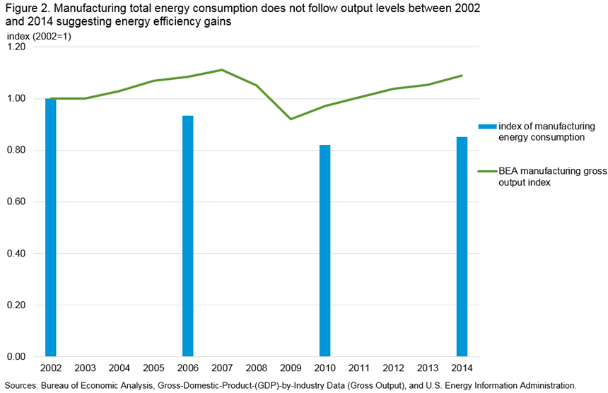

{kind=link}
{kind=link}
Manufacturing Energy Consumption Survey (MECS)
Features
Other End Use Surveys
DOE Uses MECS Data
Manufacturing Energy and Carbon Footprints

Associated Analysis
Manufacturing Energy Sankey Diagrams
Manufacturing Energy Flows Tool
Preliminary estimates show that U.S. manufacturing energy consumption increased between 2010 and 2014
MECS 2010 and 2014 — Release date: October 13, 2016
Preliminary estimates show that the total U.S. manufacturing energy consumption increased about 3.7% between 2010 [1] and 2014. This is the first measured 4-year increase in manufacturing energy consumption since 2002 (Figure 1). Energy source shares have changed modestly since 2002, with natural gas rising from 29% to 33% of all manufacturing energy consumption. Conversely, during this same period, the share of delivered energy to manufacturing from coal, coke and breeze declined from 10% to 8%, while the share of fuel oils and naphtha together decreased from 7% to 5%.
While manufacturing energy consumption did increase overall from 2010, the increase was not as large as the increase in manufacturing output during that same period, implying a decrease in energy intensity. The data represent energy demand for year 2014 as reported on the U.S. Energy Information Administration’s (EIA) Manufacturing Energy Consumption Survey (MECS).
{kind=link}
Natural gas consumption in manufacturing increased 2% between 2010 and 2014. The price of natural gas continues to be low relative to many other available alternatives [2], and it has the lowest carbon content of the fossil fuels. In fact, several manufacturers reported renovation projects in 2014 that would permanently convert residual fuel oil equipment, a common alternative, to natural gas. They cited lower natural gas prices and preparation for expected changes in federal or state environmental regulations in their rationale to switch fuels.
While natural gas consumption has increased, coal, coke and breeze consumption in manufacturing decreased 1% between 2010 and 2014. Along with coal-derived coke, Figure 1 shows that this energy source continues to be phased out as less carbon-intensive energy sources, principally natural gas, become more prevalent and more price-competitive.
Manufacturing gross output [3] rose 12% from 2010 to 2014. That rise outpaced the 3.7% increase in energy consumption, implying a decline in energy intensity. The output index represents gross output as a measure of an industry's sales, including sales to other industries as well as final users. Over the long term, manufacturing energy consumption has decreased in intensity, but the relationship between gross output and energy consumption is sometimes uneven (Figure 2). In fact, between 2010 and 2014, there was a 7% reduction in energy intensity [4], the ratio of a unit of energy consumption per unit of output [5]. Once final 2014 MECS results are released, more data will be available to determine what factors and manufacturing activities are contributing to the intensity decline. For example, besides real efficiency gains, the overall manufacturing intensity decline may be attributable to a change in the proportion of high energy-intensive industries (e.g., primary metal manufacturing) to lower ones (e.g., textiles and machine assembly).
{kind=link}
The data shown in Table 1 represent the first release from the 2014 Manufacturing Energy Consumption Survey. As the data are preliminary, the information may change somewhat as more detailed data tables and analysis of the 2014 MECS are released in 2017.
Table 1. 2014 MECS preliminary estimates of first use of energy for all purposes (fuel and nonfuel), compared to previously available data for 2010
| Consumption (trillion Btu) | |||||
|---|---|---|---|---|---|
| Energy source | 2014 (preliminary) |
2010 (a) | Percent change from 2010 |
Standard error (percent) |
*= Statistically significant change | Coal | 1281 | 1328 | -3.54% | 1.04% | * |
| Natural gas | 6,359 | 5,725 | 11.07% | 1.94% | * | Net electricity | 2,596 | 2,437 | 6.52% | 1.73% | * |
| Purchases | 2,660 | 2,510 | 5.98% | 1.73% | * |
| Transfers In | 31 | 33 | -6.06% | 5.05% | |
| Onsite generation from noncombustible renewable energy | 7 | 7 | 0.00% | 6.89% | |
| Sales and transfers offsite | 102 | 113 | -9.73% | 1.01% | * |
| Coke and breeze | 318 | 374 | -14.97% | 0.61% | * |
| Residual fuel oil | 74 | 170 | -56.47% | 0.84% | * |
| Distillate fuel oil | 116 | 135 | -14.07% | 9.11% | |
| Hydrocarbon gas liquids (HGLs) including ethane | 2,163 | 2,057 | 5.15% | 0.59% | * |
| Other | 6,776 | 6,920 | -2.08% | 1.27% | |
| Lubricants (b) | 262 | 271 | -3.32% | 0.00% | - |
| Special naphthas (b) | 69 | 17 | 308.28% | 0.00% | - |
| Waxes (b) | 15 | 17 | -11.76% | 0.00% | - |
| Miscellaneous nonfuel products (b) | 183 | 159 | 15.09% | 0.00% | - |
| Naphtha (c) | 690 | 943 | -26.83% | 0.00% | - |
| Bitumen (c) | 793 | 878 | -9.68% | 0.00% | - |
| Kerosene | 39 | 35 | 11.43% | 0.40% | * |
| Motor gasoline | 6 | 8 | -25.00% | 11.54% | * |
| Petroleum coke | 804 | 762 | 5.51% | 2.11% | * |
| Still gas/waste gas | 1,535 | 1,413 | 8.63% | 0.11% | * |
| Pulping liquor or black liquor | 810 | 824 | -1.70% | 0.49% | * |
| Biomass total | 713 | 630 | 13.17% | 5.26% | * |
| Agricultural waste | 91 | 44 | 106.82% | 1.86% | * |
| Wood harvested directly from trees | 67 | 64 | 4.69% | 4.74% | |
| Wood residues and byproducts from mill processing | 516 | 504 | 2.38% | 5.49% | |
| Wood-related and paper-related refuse | 39 | 17 | 129.41% | 78.81% | |
| Net steam/hot Water | 555 | 731 | -24.08% | 6.25% | * |
| Miscellaneous | 302 | 232 | 30.17% | 19.03% | |
| Shipments of energy sources produced onsite (d) | 638 | 788 | -19.04% | 0.40% | * |
| Total (e) | 19,045 | 18,358 | 3.74% | 0.93% | * |
| (a) U.S. Energy Information Administration, U.S. Product Supplied for Crude Oil and Petroleum Products data were used to adjust 2010 values for comparison to 2014 data. (b) Source: U.S. Energy Information Administration, U.S. Product Supplied for Crude Oil and Petroleum Products. (c) The preliminary estimates for 'Naphtha' and 'Bitumen' are from the U.S. Energy Information Administration, U.S. Product Supplied for Crude Oil and Petroleum Products. The final estimates of 'Naphtha' and 'Bitumen' will be from 2014 collected data. (d) 'Shipments of Energy Sources Produced Onsite' are those shipments produced or transformed onsite from the nonfuel use of other energy sources. For example, at an establishment that processes coal to make coke for later use, the entire quantity of coal is counted as first use. Any onsite consumption of coke is not counted as first use because it would duplicate the coal use. If some of the coke is then sold to another establishment, then that second establishment will consider this coke to be a shipment of an offsite-produced energy source. Hence, the second establishment will count this coke as its first use, thereby resulting in double counting. In order to eliminate the double counting, the energy equivalent of the coke shipment must be subtracted from first use. (e) 'Total' is the sum of all of the listed energy sources, including 'Other,' minus the shipments of energy sources produced onsite. It is the total amount of first use of energy for all (fuel and nonfuel) purposes. - The data from the U.S. Energy Information Administration, U.S. Product Supplied for Crude Oil and Petroleum Products is a population data set. Therefore no significance testing was conducted on this data. Notes: Totals may not equal sum of components because of independent rounding. The significance testing was conducted using a 95 percent confidence interval. Source: U.S. Energy Information Administration, Office of Energy Consumption and Efficiency Statistics, Form EIA-846, '2014 Manufacturing Energy Consumption Survey.' |
|||||
Footnotes
1. U.S. Energy Information Administration, U.S. Product Supplied for Crude Oil and Petroleum Products data were used to adjust 2010 values for comparison to 2014 data. Prior to 2014, previously aggregated EIA-810, “Monthly Refinery Report” shipments data were used to produce nonfuel energy estimates at petroleum refineries (also including lubricants, special naphtha, and waxes); however the MECS has started using EIA petroleum product supplied data to produce these estimates to better represent what happens downstream from a refinery, which are incorporated into Table 1. Although the 2014 MECS collected bitumen and petrochemical feedstocks for the first time from the industries that use them, the preliminary estimates for these two nonfuel energy products also use the product supplied quantities. The results of the data collection for bitumen and petrochemical feedstocks will be used in the upcoming detailed tables.
2. U.S. Energy Information Administration Table ET5. Industrial Sector Energy Price and Expenditure Estimates by Source, 1970-2014, United States, http://www.eia.gov/state/seds/data.cfm?incfile=/state/seds/sep_prices/ind/pr_ind_US.html&sid=US
3. Bureau of Economic Analysis, Gross-Domestic-Product-(GDP)-by-Industry Data (Gross Output), http://bea.gov/industry/gdpbyind_data.htm. The Chain-Type Quantity Index spreadsheet within the “1947-2015: up to 71 industries” table.
4. Changes in manufacturing energy intensity may be attributed to both changes in energy efficiency and changes in the relative output levels of industries. The upcoming detailed industrial tables will provide additional information.
5. The output measures from BEA were used to determine the energy intensities in this document. For example, to calculate the energy intensity change between 2010 and 2014 first calculate the energy intensity for each year. For 2010, the energy intensity is the 2010 total energy consumption divided by the 2010 chain-type quantity index from BEA. The 2014 energy intensity is calculated the same as 2010 but using 2014 values. The final step in calculating the energy intensity change between the two years is: (2014 energy intensity – 2010 energy intensity) / 2010 energy intensity.